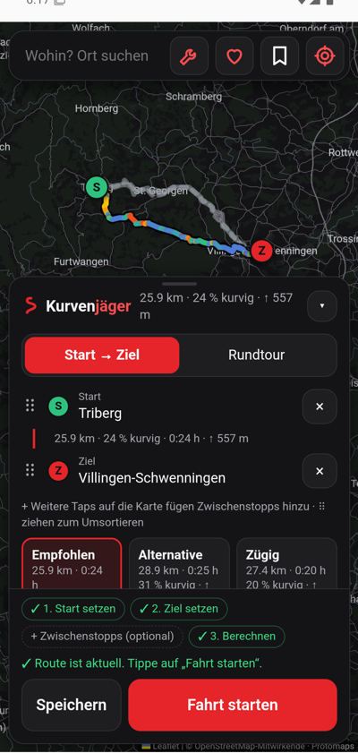
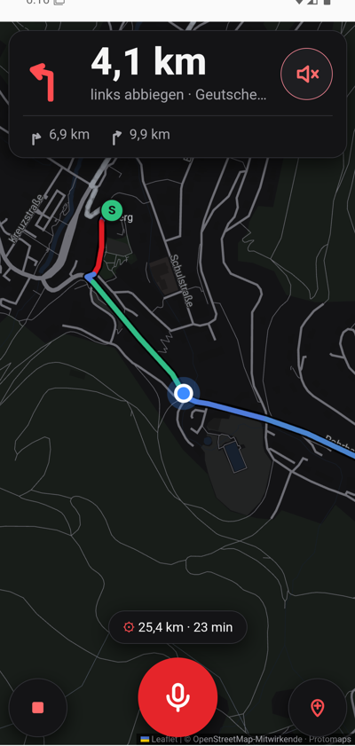

Die kurvige Route statt der schnellsten.
Kurvenjäger plant Motorradtouren über die schönsten kurvigen Straßen und führt dich mit Sprachansagen hin. Kostenlos für alle, Open Source, ohne Werbung, ohne Konto.
Android-Beta herunterladen Quellcode
Beta: Straßendaten zunächst für Baden-Württemberg. Google Play folgt, iOS später.


Was Kurvenjäger kann
- Kurvige Routen von Start über Zwischenstopps zum Ziel oder als Rundtour – du bestimmst, wie viel Kurve und wie viel Umweg.
- Navigation mit Sprachansagen, Spitzkehren-Warnung und Neuberechnung; Sprachbefehle wie „Tankstelle“ oder „Zwischenstopp in Todtnau“.
- Wetter und Sonne unterwegs: Regen, Böen, Kälte und tief stehende Sonne entlang der Strecke zur geplanten Abfahrtszeit.
- Offline: Region herunterladen und ohne Netz planen und navigieren.
- Lernt deinen Stil: Bewerte deine Touren – die App merkt sich, ob du Kehren oder flotte Bögen magst.
- Deine Daten bleiben bei dir: kein Konto, kein Tracking. Fahrten und Profil verlassen dein Handy nicht.
Unterstützen
Kurvenjäger bleibt kostenlos und bekommt keine bezahlten Funktionen. Wer mag, hilft mit einem frei gewählten Betrag, die laufenden Kosten zu tragen (Datenspeicher, Entwicklerkonten).
Betrag frei wählbar, einmalig oder regelmäßig. Link nach dem Einrichten des Liberapay-Kontos ersetzen
Mitmachen
Fehler gefunden, eine Idee, Lust mitzuprogrammieren? Alles läuft offen auf GitHub. Falsche Straßen korrigierst du am besten direkt in OpenStreetMap – das hilft allen.